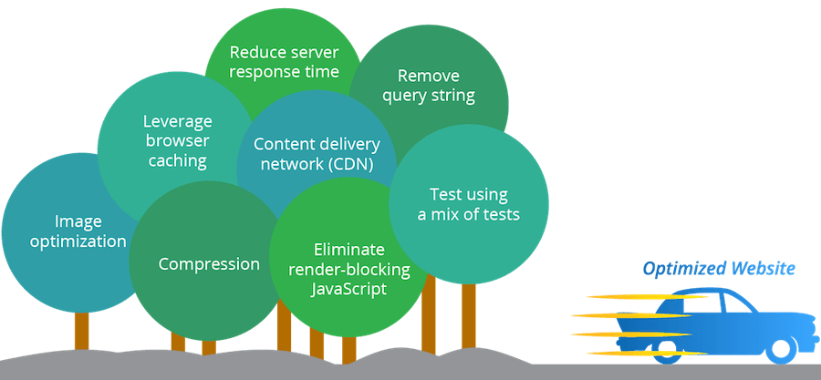
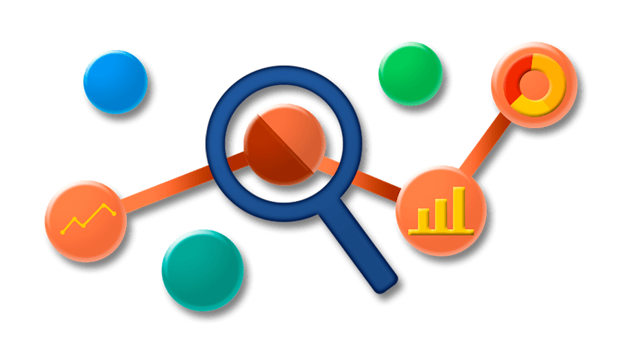

Incorporating measurement and optimization tools
- Using Optimizely for A/B testing
- Split testing
- Optimizely.com
continued...
Harnessing Google analytics to better understand site visitors
- Reports within google analytics
- Set time dates to be measured
- Demographics
- Acquisition data

Employing heatmapping tools to measure and monitor page usage
- Crazyegg.com
- Heatmap
- Used to make design changes
- Powerful tool
Applying Moz for larger scales sites
- Moz identify trouble spot in SEO efforts
- Higher priced tool
- Analytics with many tools
- Site explorer
- Page grader
- Also powerful tool but with a price tag